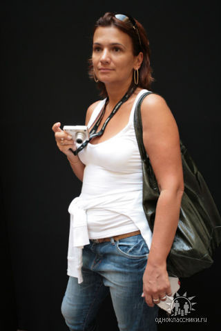
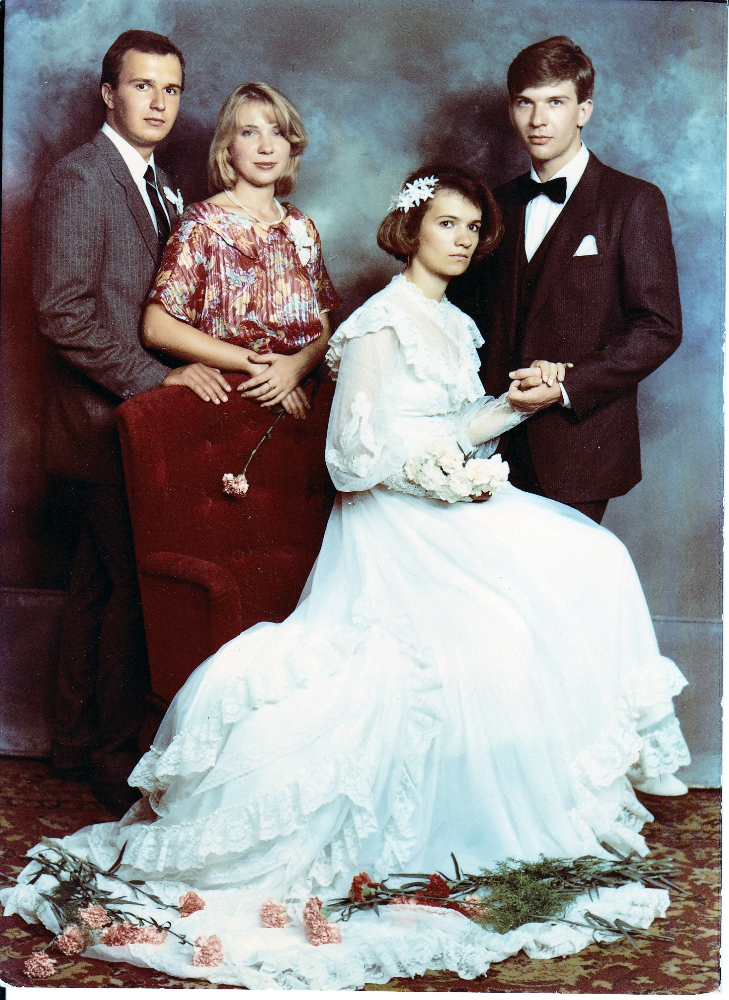
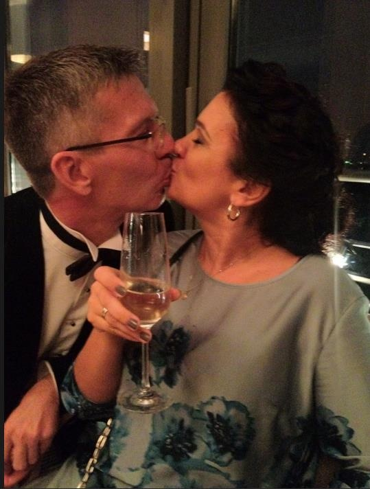
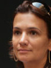
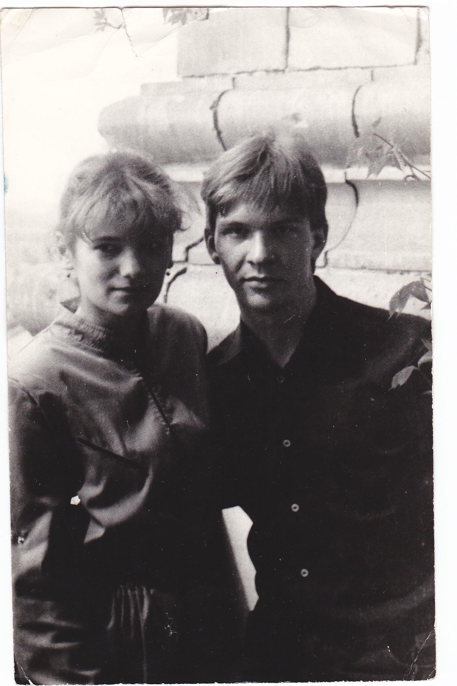
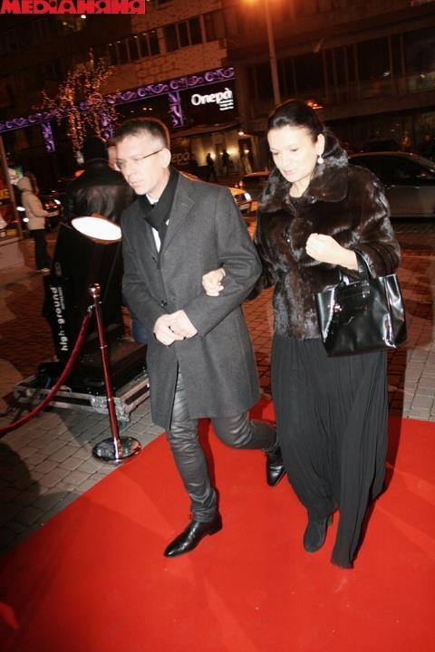
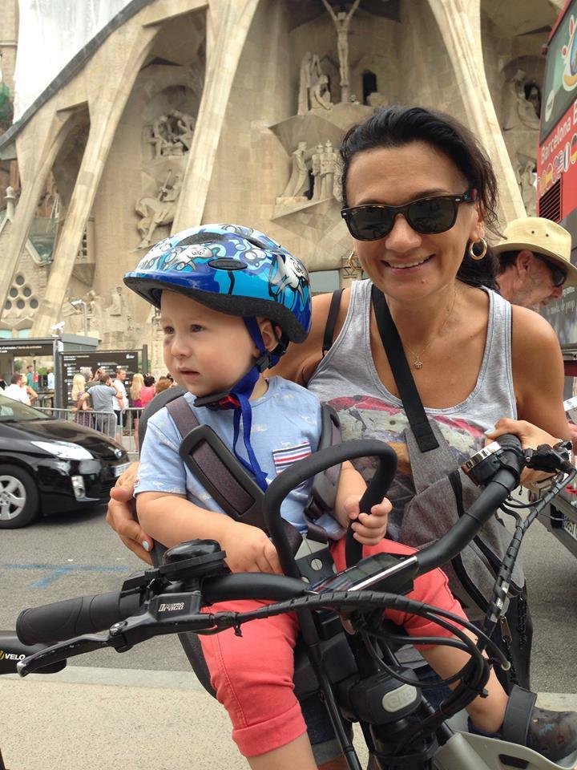

Тетяна Кульчинська
23 FEB 1965 —
Список предків
| Id | Глибина | Колір | Ім'я | Народження | Смерть | Місце народження | Інше |
|---|---|---|---|---|---|---|---|
| I23 | 0 | Тетяна Кульчинська | 23 FEB 1965 | Київ | Married Name: Сохацька; Email: tancha.soch@@gmail.com; RESI; EDUC | ||
| I26 | 1 | Микола Кульчинський | 26 MAR 1935 | Київ | Email: mykola.kulchinskyy@@gmail.com; RESI | ||
| I27 | 1 | Олена Гончаренко | 18 APR 1937 | 22 FEB 2026 | Бєжица (Брянск) | Married Name: Кульчинська; Email: olena.kulchinska@@gmail.com; RESI; RESI | |
| I31 | 2 | Иван Кульчинский | 24 FEB 1914 | 2 JUN 1992 | |||
| I34 | 2 | Александра Герасимова | 9 MAY 1916 | 11 MAY 2006 | Kiev, Kiev, Russian Empire | Married Name: Кульчинская; CHR | |
| I88 | 2 | Павел Гончаренко | ABT 24 APR 1917 | Київська область ? Зіньківщина ? | |||
| I39 | 2 | Вера Гутьер | 12 SEP 1919 | 7 DEC 2005 | Брянск | Married Name: Гутьер; BURI | |
| I105 | 3 | Мария Бабич | 1889 | 3 AUG 1928 | Married Name: Кульчинская; BURI | ||
| I32 | 3 | Николай Кульчинский | 1892 | 19 AUG 1919 | Забелочье Кичкировской волости Радомышльского уезда | BURI | |
| I104 | 3 | Мария Радионова | ABT 25 FEB 1890 | 2 NOV 1970 | Киев, Киевская, Российская империя | Married Name: Герасимова | |
| I35 | 3 | Сергей Герасимов | 1894 | 1954 | Орловская губерния | BURI | |
| I530464 | 3 | NN | |||||
| I178 | 3 | Іван Гончаренко | ABT 1890 | ||||
| I155 | 3 | Евгений Goutière Гутьер | 14 FEB 1881 | 1941 | Sewerynowka, Mezyrow, Lityn, Vinnica | CHR; RESI; EVEN: Херсонской губернии Херсонский мещанин | |
| I154 | 3 | Елена Румянцева | ABT 1897 | 12 AUG 1976 | Бежица | Married Name: Гутьер | |
| I500331 | 4 | Елисей Бабич | ABT 1865 | ||||
| I500333 | 4 | Вера Николаевна | ABT 1875 | Married Name: Кульчинская | |||
| I500332 | 4 | Александр Кульчинский | ABT 1873 | Забелочье Кичкировской волости Радомышльского уезда | |||
| I540127 | 4 | Татьяна ? | |||||
| I540124 | 4 | ||||||
| I180 | 4 | Іоаннъ Герасимовъ | ABT 1871 | ||||
| I179 | 4 | Пётр Радіоновъ | 25 AUG 1864 | 1931 | Киев, Киевский уезд, Киевская губерния, Российская империя | BURI | |
| I502895 | 4 | Акулина | ABT 1866 | Married Name: Родионова | |||
| I157 | 4 | Amélie Chauvet Шуве | ABT 1860 | Married Name: Gautier | |||
| I159 | 4 | Екатерина Поснова | ABT 1877 | ABT MAR 1942 | Married Name: Румянцева; BURI | ||
| I156 | 4 | Vladimir Владимир Евгеньевич Goutière Гутьер | ABT 1857 | OCCU: директор сахарного завода, гражданин Франции; RESI; EVEN: Publication Number: FR452038A; Patent Description Procédé et appareil pour la condensation de la vapeur et le lavage des gaz | |||
| I158 | 4 | Николай Румянцев | ABT 1867 | Костромская ?? | |||
| I540129 | 5 | Стефан ? | |||||
| I540128 | 5 | Афанасий ? Бабич | |||||
| I540136 | 5 | Параскева Евлампиева Побережнюкова | 1841 | OCCU: солдатка вдова | |||
| I540133 | 5 | Герасим Николаев Кульчинский | 1834 | Забелочье Кичкировской волости Радомышльского уезда | OCCU: безсрочно отпускной рядовой | ||
| I540082 | 5 | Захарій Петров Радіоновъ | 1841 | ||||
| I540081 | 5 | Мария Иванова Литвиненкова | 1847 | EVEN | |||
| I533595 | 5 | ||||||
| I524105 | 5 | Анна Николаевна | ABT 1836 | ||||
| I500330 | 5 | Николай Поснов | 1853 | ||||
| I500337 | 5 | Евгений Николаевич Гутьер | ABT 1832 | ABT 1912 | OCCU: Управляющій Киевской конторой Государственнаго Банка; RESI; OCCU: Директор | ||
| I506464 | 5 | ||||||
| I506462 | 5 | Сергей Румянцев | ABT 1838 | ||||
| I533594 | 5 | Henri Генрих Chauvet Шове | ABT 1836 | ||||
| I540134 | 6 | Наталия Васильева Кульчинская | 1804 | EVEN: куплена от титулярного советника Набокова; OCCU: дворовая Варвары Никифоровой Езерской | |||
| I540142 | 6 | Евлампий Побережнюк | |||||
| I540083 | 6 | Петр Радіоновъ | ABT 1817 | ||||
| I540084 | 6 | Иван Литвиненко | ABT 1823 | ||||
| I540184 | 6 | NN | |||||
| I525191 | 6 | Николай Иванович Goutière Гутьер | ABT 1800 | Невшатель, Швейцарія | OCCU: надворный советник 7кл, контролер; OCCU: титулярный советник, помощник контролера | ||
| I540135 | 7 | Василий Кульчинский | ABT 1780 | ||||
| I540107 | 7 | Петр Радіоновъ | ABT 1787 | ||||
| I540208 | 7 | ||||||
| I540185 | 7 | Jean-Pierre Goutière | ABT 1775 |
Життєвий шлях
BORN
23 FEB 1965 Київ
EDUC
BET 1982 AND 1988 КДХІ
Фотогалерея








